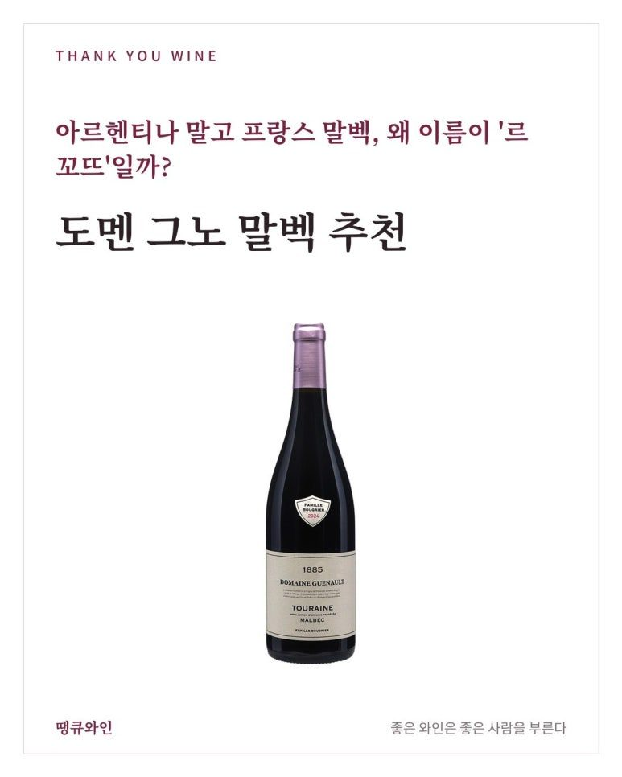
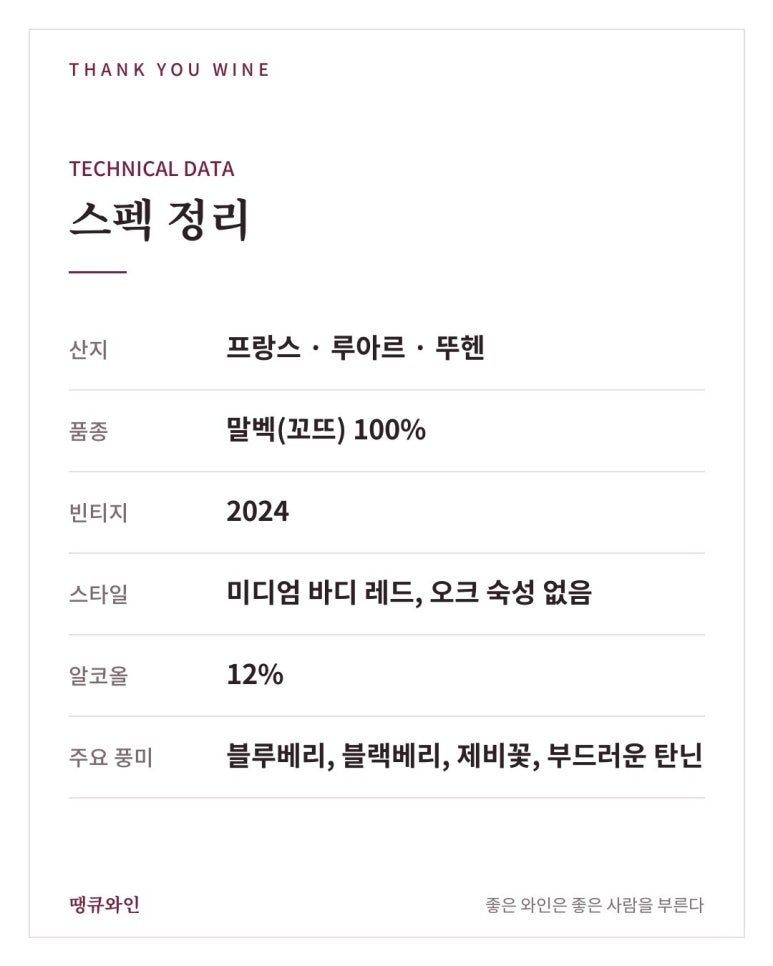
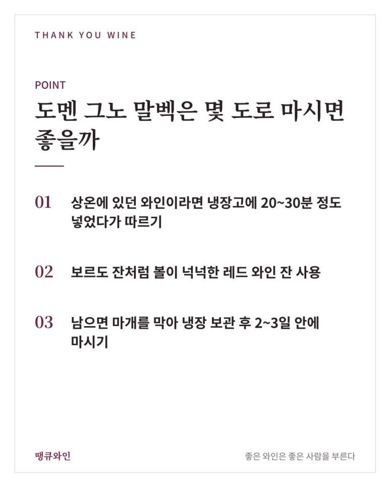
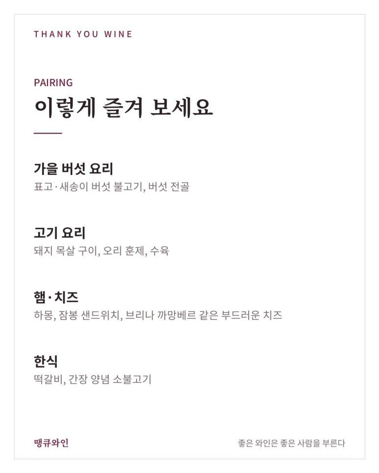
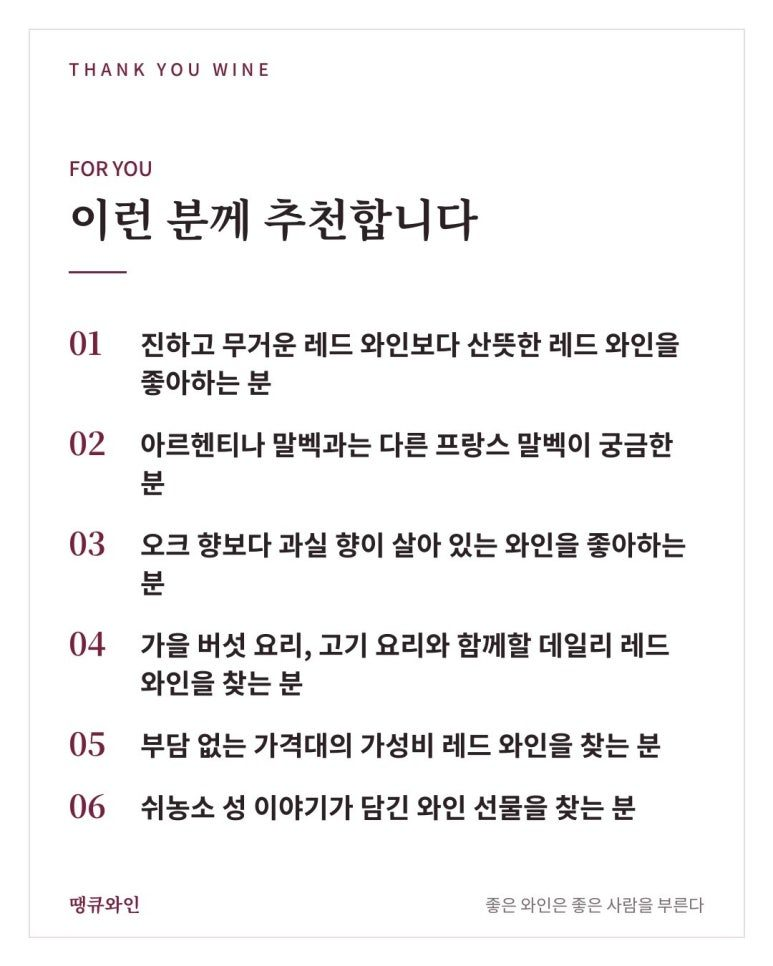
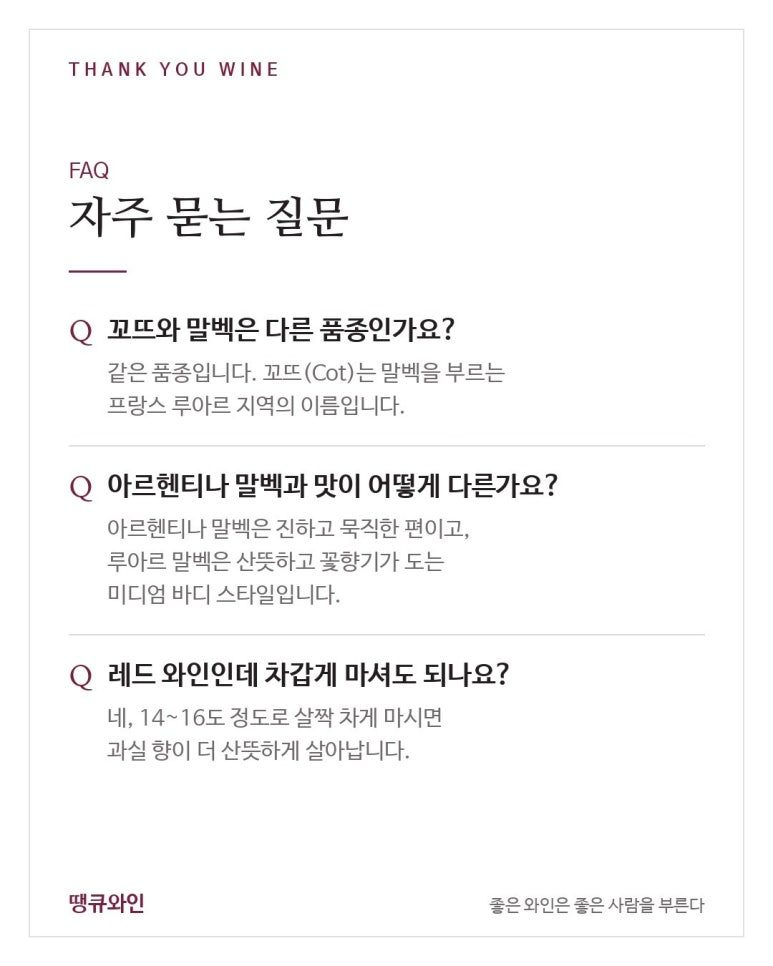

도멘 그노 말벡 추천
아르헨티나 말고 프랑스 말벡, 왜 이름이 '르 꼬뜨'일까?
도멘 그노 말벡 추천은 말벡의 고향 프랑스 루아르에서 ‘꼬뜨’라는 이름으로 만든, 살짝 차게 마셔도 맛있는 산뜻한 레드예요.
말벡이라고 하면 대부분 아르헨티나를 먼저 떠올립니다.
그런데 말벡의 고향은 사실 아르헨티나가 아니라 프랑스입니다.
그리고 프랑스 루아르에서는 이 품종을 말벡이 아닌 전혀 다른 이름으로 부릅니다.
오늘 소개할 도멘 그노 뚜헨 말벡 아오뻬 (르 꼬뜨)는 그 이름부터 이야기가 시작되는 한 병입니다.
무거운 레드 와인이 아니라, 살짝 차게 마셔도 맛있는 산뜻한 말벡이라는 점이 이 와인의 가장 큰 매력입니다.
마침 땡큐와인에도 2024 빈티지가 새로 들어와, 이번 기회에 함께 정리했습니다.
무엇보다 중요한 포인트는 바로,
말벡의 고향 프랑스 루아르에서 ‘꼬뜨’라는 이름으로 만든, 살짝 차게 마셔도 맛있는 산뜻한 레드라는 것.

한눈에 보는 도멘 그노 말벡
- 생산자
- 도멘 그노(Domaine Guenault), 루아르 뚜헨의 가족 경영 와이너리
- 산지
- 프랑스 루아르 밸리 뚜헨(Touraine) AOP
- 품종
- 말벡(꼬뜨, Côt) 100%
- 스타일
- 오크를 쓰지 않은 미디엄 바디 레드 와인
- 이런 분께
- 무겁지 않은 레드 와인, 가성비 좋은 데일리 레드를 찾는 분
- 아르헨티나 말벡
- 햇살 좋은 고지대에서 자라 진하고 묵직한 스타일
- 루아르 말벡
- 서늘한 기후에서 자라 산뜻하고 꽃향기가 도는 스타일
뚜헨은 어떤 산지일까? 셰르 강과 쉬농소 성 이야기
뚜헨(Touraine, 투렌이라고도 표기)은 루아르 밸리 한가운데에 있는 와인 산지입니다.
루아르 밸리는 아름다운 고성(古城)이 많아 '프랑스의 정원'이라고 불리고, 유네스코 세계유산으로도 지정되어 있습니다.
도멘 그노가 있는 마을 가까이에는 루아르에서 가장 유명한 성 가운데 하나인 쉬농소 성(Château de Chenonceau)이 있습니다.
쉬농소 성은 셰르 강 위를 가로지르듯 지어진 독특한 모습으로 잘 알려져 있습니다.
앙리 2세가 디안 드 푸아티에에게 이 성을 선물했고, 앙리 2세가 세상을 떠난 뒤에는 왕비 카트린 드 메디시스가 성을 되찾았다는 이야기가 전해집니다.
그래서 쉬농소 성은 여러 여인의 손을 거쳐 가꾸어졌다는 의미로 '여인들의 성'이라는 별명으로도 불리죠.
이 와인을 선물할 때는
“쉬농소 성 옆, 셰르 강 언덕에서 온 말벡”
이라는 이야기를 함께 건네기 좋습니다.
도멘 그노 말벡은 어떻게 만들까?
도멘 그노 말벡은 오크통을 쓰지 않고 과실 본연의 맛을 살린 레드 와인입니다.
영국 와인 소사이어티(The Wine Society)의 소개에 따르면 오크 영향이 없는 스타일로, 알코올은 12% 수준입니다.
오크 숙성을 거치지 않으면 바닐라나 스모키한 향 대신 포도 자체의 신선한 과실 향이 그대로 살아납니다.
그래서 이 와인은
신선한 블루베리 + 은은한 꽃향기 + 부드러운 탄닌
이 세 가지가 함께 느껴지는 것이 특징입니다.
알코올이 높지 않아 식사와 함께 편하게 마시기 좋은 것도 장점입니다.
도멘 그노 말벡 테이스팅 노트
도멘 그노 말벡은 진한 과실 향에 꽃향기가 더해진 산뜻한 레드 와인입니다.
코에서는 블루베리와 블랙베리 같은 검은 과실 향이 먼저 올라옵니다.
여기에 제비꽃처럼 은은한 꽃향기가 더해지면서 향이 한층 화사해집니다.
입안에서는 탄닌이 부드럽고 유연하게 느껴지며, 서늘한 루아르 산지다운 산미가 마무리를 깔끔하게 정리해 줍니다.
와인 소사이어티 역시 2024 빈티지를 서늘하고 신선한 해의 와인으로, 푸른 과실과 검은 과실의 깊이가 있고 부드럽고 향기로운 와인이라고 소개했습니다.
진한 아르헨티나 말벡이 조금 부담스러웠던 분들이라면 오히려 이 말벡이 더 편하게 느껴질 수 있습니다.
그래서 지난주 한 모임 자리에도 같은 도멘 그노의 쇼비뇽 블랑과 함께 이 말벡을 준비했어요.
화이트로 시작해 산뜻한 레드로 이어 가기 좋은 조합이거든요.
DOMAINE GUENAULT TOURAINE MALBEC AOP LE CÔT
- 산지: 프랑스 · 루아르 · 뚜헨
- 품종: 말벡(꼬뜨) 100%
- 빈티지: 2024
- 스타일: 미디엄 바디 레드, 오크 숙성 없음
- 알코올: 12%
- 주요 풍미: 블루베리, 블랙베리, 제비꽃, 부드러운 탄닌

도멘 그노 말벡은 몇 도로 마시면 좋을까?
14~16도 정도로 살짝 차게 마시는 것을 추천합니다.
- 상온에 있던 와인이라면 냉장고에 20~30분 정도 넣었다가 따르기
- 보르도 잔처럼 볼이 넉넉한 레드 와인 잔 사용
- 남으면 마개를 막아 냉장 보관 후 2~3일 안에 마시기

와인 소사이어티도 이 와인을 살짝 차게 마시기 좋은 와인으로 소개하고 있습니다.
조금 차게 마시면 과실 향은 더 산뜻해지고 마무리는 한결 가벼워집니다.
도멘 그노 말벡과 어울리는 음식은?
부드러운 탄닌과 산뜻한 산미를 가진 루아르 말벡은 너무 무겁지 않은 고기 요리와 특히 잘 어울립니다.
와인 소사이어티도 햄, 스테이크, 치즈와의 페어링을 추천하고 있습니다.
땡큐와인에서 추천한다면 지금 같은 10월에는 이런 메뉴와 함께 즐겨보겠습니다.
- 가을 버섯 요리: 표고·새송이 버섯 불고기, 버섯 전골
- 고기 요리: 돼지 목살 구이, 오리 훈제, 수육
- 햄·치즈: 하몽, 잠봉 샌드위치, 브리나 까망베르 같은 부드러운 치즈
- 한식: 떡갈비, 간장 양념 소불고기

특히 가을 버섯 불고기와의 조합을 추천드립니다.
버섯의 향긋한 풍미와 간장 양념의 감칠맛에 말벡의 블루베리 향이 더해지면, 무거운 레드 와인보다 훨씬 산뜻하게 음식과 어우러지거든요.
도멘 그노 말벡, 이런 분께 추천합니다
- 진하고 무거운 레드 와인보다 산뜻한 레드 와인을 좋아하는 분
- 아르헨티나 말벡과는 다른 프랑스 말벡이 궁금한 분
- 오크 향보다 과실 향이 살아 있는 와인을 좋아하는 분
- 가을 버섯 요리, 고기 요리와 함께할 데일리 레드 와인을 찾는 분
- 부담 없는 가격대의 가성비 레드 와인을 찾는 분
- 쉬농소 성 이야기가 담긴 와인 선물을 찾는 분

특히 “레드 와인은 좋은데 너무 떫고 무거운 건 싫다”는 분들께 권해 드리기 좋은 와인입니다.
선물용으로도 활용도가 높습니다.
프랑스 루아르 와인이라는 점, 그리고 쉬농소 성 이야기가 함께 있어 와인을 잘 아는 분께도 처음 접하는 분께도 이야깃거리가 되는 한 병입니다.
집들이나 가을 캠핑, 여럿이 함께하는 저녁 모임에 한 병 들고 가기에도 좋습니다.

자주 묻는 질문
꼬뜨(Côt)와 말벡은 다른 품종인가요?
같은 품종입니다. 꼬뜨는 말벡을 부르는 프랑스 루아르 지역의 이름입니다.
아르헨티나 말벡과 맛이 어떻게 다른가요?
아르헨티나 말벡은 진하고 묵직한 편이고, 루아르 말벡은 산뜻하고 꽃향기가 도는 미디엄 바디 스타일입니다.
레드 와인인데 차갑게 마셔도 되나요?
네, 이 와인은 14~16도 정도로 살짝 차게 마시면 과실 향이 더 산뜻하게 살아납니다.
결국 도멘 그노 말벡의 매력은 ‘산뜻한 말벡’입니다
도멘 그노 뚜헨 말벡 아오뻬 (르 꼬뜨)는 말벡의 프랑스식 옛 이름을 그대로 라벨에 담은 와인이자, 서늘한 루아르에서 자란 말벡이 얼마나 산뜻할 수 있는지 보여 주는 와인입니다.
그래서 저는 이 와인을
“말벡은 무겁다는 생각을 바꿔 줄 산뜻한 한 병”
이라고 소개하고 싶습니다.
같은 산지의 도멘 그노 쇼비뇽 블랑과 함께 준비하면 화이트와 레드를 한 번에 맞출 수 있어 모임 자리에도 좋습니다.
산뜻한 프랑스 레드를 좋아하신다면 부르고뉴 피노 누아와 나란히 비교해 보시는 것도 재미있습니다.
→ 오래된 포도나무가 만드는 특별한 차이, 도멘 조나단 세갱 꼬뜨 드 쇼슈아 피노누아 VV 2024
선선한 가을 저녁, 쉬농소 성 옆 셰르 강 언덕에서 온 산뜻한 말벡을 직접 만나보세요.
이 글은 땡큐와인 네이버 블로그에 먼저 올린 글이에요.